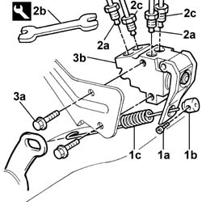
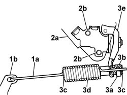

3330C60 LOAD PROPORTIONING VALVE (one), left or right - R.R. - Includes adjustment.
- Path
- Procedures > 33 BRAKES > 3330 HYDRAULIC BRAKE SYSTEM > 3330C BRAKE PUMP, RESERVOIR AND LOAD PROPORTIONING VALVE > 3330C60 LOAD PROPORTIONING VALVE (one), left or right - R.R. - Includes adjustment.
- Kind
- repair procedure (removal / refitting; the operation number is the code)
- Applies to
- engines: 1.4 8v, 1.6 16v, 1.3 JTD 16V, 1.9 JTD 8V; all production periods
- Interactive page
- https://sloeber94.github.io/elrnDB-fDbl/en/#/2584663
Applies to: engines: 1.4 8v, 1.6 16v, 1.3 JTD 16V, 1.9 JTD 8V; all production periods
 Removing
Removing
 Refitting
RefittingPlace the car on a lift.
1. Raise the lift and undo detent screw (1a) on regulation device (1b) of load proportioning valve (1c).
2. Disconnect connectors (2a) using wrench (2b) and connectors (2c) using a 13 mm fixed wrench.
 | Name | Country |
|---|---|---|
2b | Box wrench for brake fittings | 1.856.132.000 |
3. Undo bolts (3a) and remove load proportioning valve (3b).

Applies to: engines: 1.4 8v, 1.6 16v, 1.3 JTD 16V, 1.9 JTD 8V; all production periods
Refitting
RemovingProceed as follows.
1. Attach eye (1) of traction spring into the hole on bracket (1b) on the rear axle.
2. Secure the load proportioning valve to bracket (2a) using bolts (2b).
 | Fastening | Component | Ø | Value (daNm) |
|---|---|---|---|---|
2b | Bolt | LOAD PROPORTIONING VALVE | M8 | 2.8 |
3. tighten detent screw (3a) of regulation device (3b) to a torque of 1.23 0.28 daNm while maintaining tool (3c) supplied with the load proportioning valve in position.
Remove retaining ring (3c).

Applies to: engines: 1.4 8v, 1.6 16v, 1.3 JTD 16V, 1.9 JTD 8V; all production periods
Op. 0010T64 BRAKE AND/OR CLUTCH FLUID CHECK LEVEL AND TOP UP AS NECESSARY.
Op. 0010T65 HYDRAULIC BRAKE SYSTEM - BLEED AIR.
Remove the car from the lift.
Topics linked from this page (2)
- 0010T64 brake and or clutch fluid check level and top up as necessary
- 0010T65 hydraulic brake system bleed air